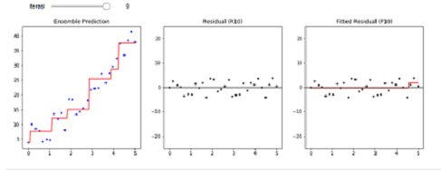

XGboost adalah implementasi lanjutan dari algoritma peningkatan gradien (Gradient Boosting). XGboost menggunakan prinsip ensemble yaitu menggabungkan beberapa set pembelajar (tree) yang lemah menjadi sebuah model yang kuat sehinga menghasilkan prediksi yang kuat, oke sebelum masuk ke XGBoost kita akan mempelajari dulu yg namanya ensemble learning
ensemble learning merupakan suatu metode algoritma yang cara trainingnya itu berbarengan dan bersamaan sama kaya random forest, XGBoost juga termasuk algoritma yg menggunakan metode ensemble learning
ensemble learning merupakan suatu metode algoritma yang cara trainingnya itu berbarengan dan bersamaan sama kaya random forest, XGBoost juga termasuk algoritma yg menggunakan metode ensemble learning
oke bisa kita lihat perbedaan dari boosting dan bagging, kalo boosting itu menguatkan yg lemah sedangkan bagging melemahkan yg kuat, dan dibawah juga kita bisa liat perbedaan boosting dan bagging dengan jelas, kalo boosting kombinasi training dan jadilah hasil akhir, tapi kalo bagging itu rata rata dari pohon yg overfitt
bad learner : lebih jelek dari rata rata
coin toss learner : prediksi sama dengan rata rata
week learner : aga mending dibandingkan rata rata
good learner : nice prediction dan itu yg kita mau
strong learner : overfitt prediction
AdaBoost, kependekan dari Adaptive Boosting, adalah meta-algoritme klasifikasi statistik yang dirumuskan oleh Yoav Freund dan Robert Schapire, yang memenangkan Hadiah Gödel 2003 untuk pekerjaan mereka. Ini dapat digunakan bersama dengan banyak jenis algoritma pembelajaran lainnya untuk meningkatkan kinerja
oke jadi disini saya akan menjelaskan idea dr adaptive boosting, jadi idea dr adaptive boosting itu adalah "belajar dari kesalahan" anjayy keren banget kan, oke untuk lebih clearnya kita bisa liat gambar yg dikanan ini, pakailah week learner training, yaudah kita traning aja, kita anggep merah itu cowo dan biru itu cewe, training pertamaa masih banyak yg melest yaa bisa liat aja dr illustrasi dibawah, yudh tahap selanjutnya boosting semua yg masih gagal gagal ini kita bobotin lebih kuat dan jadikan data set selanjutnya, jadi mempelajari ksalahanya dan jadiin kesalahan itu sebagai target training selanjutnya, yg masih gagal ini dibobotin lebih kuat hingga prediksi kita akan lebih ke yg td gagal, tp akibatnya yg td bener jd salah, dan kita akan ulang ulang seperti td prediksinya jelek bobotin jadiin dataset training ganti lg dan kita akan gabungkan semua model menjadi satu sampe prediksi kita itu good learner, mungkin sekian aja penjelasan adaptive boosting yg penting kita paham lagian kedepanya gabakal kita pake juga yg kita pake gradient boosting
Oke jadi kita masuk ke gradient boosting, oke kita bedah dulu idea dr gradient boosting, idea dr gradient boosting adalah seperti olahraga golf, pukul bola golf ke lubang yg harus dimasuki.itukan galangsung masuk yah gamungkin gt bisa langsung masuk yah yaudah kita pukul bola golfnya sedikit demi sedikit agar bisa masuk ke lubang golfnya kalopun nanti kelewatan yaaa pukul lagi sampai masuk ke lubang yg kita tuju
dan untuk dibalik layar kurang lebih kaya gini jadi dia akan ngeplot kesalahanya satu persatu dan dia akan training pada kesalahan itu, kurang bagus lagi plot lagi training lg pada data yg jelek truss aja gitu sampe nanti kita dapet prediksi yg bagus dan hasil akhirnya kurang lebih kaya gambar dibawah
learning rate, kalo learning rate di gradient boosting itu berbeda dengan learning rate di adaptive boosting, kalo learning rate di gradient boosting itu berapa persen dr fitted residual(p1) yg mau kita tambahin ke ensemble prediction, kalo learning ratenya 0 yaudah = 0 gabelajar, biasanya yg kita mau 0 sampai 1 kalo learning kegedean 2 maybe itu akan ngaco, dan udh gausah dipikrin nanti kita akan tunning
jadi apa itu xgboost???xgboost itu sebenernya singkatan dari Extream gradient boosting, pada dasarnya adalah algo gradient boosting cuma diimprove lagui supaya komputasinya semakin cepet dan temuin teknik teknik untuk ngehandle overfit, dan ini ditemukan oleh orang cina yg namanya : Tianqi Chen dan Carlos Guestrin dia buat gradient boosting yg bisa dikomputasi parallel dan bisa pake GPU.oke mungkin sekian aja penjelasan mengenai algoritma XGBoost
parameter XGboost sebenrnya banyak banget cuma dikasih sm pa wira sebagian doang tapi yaudah gapapa.jadi ini adalah hyper parameter tuning yg biasa digunakan XGBoost :
{'prep__numeric__poly__degree': [1, 2, 3],
'prep__numeric__poly__interaction_only': [True, False],
'algo__max_depth': [3, 6, 10],
'algo__colsample_bytree': [0.4, 0.6, 0.8],
'algo__n_estimators': [100, 150, 200],
'algo__subsample': [0.4, 0.6, 0.8],
'algo__gamma': [1, 5, 10],
'algo__learning_rate': [0.01, 0.1, 1],
'algo__reg_alpha': [0.01, 0.1, 10],
'algo__reg_lambda': [0.01, 0.1, 10]}